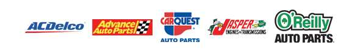

2018 Toyota Camry
Oil service, charging system check, battery testing and replacement, wheel balance, tire rotation and hood strut work.
Allison T.Full service auto repair, tires, roadside assistance, towing, vehicle lockout help, keys, paint and body work from one Escondido shop.
From routine maintenance to difficult diagnostics, drivetrain work and towing, C & D handles the work that keeps your vehicle reliable.
Diagnostics, brakes, engines, electrical, AC, suspension, transmission and maintenance.
02Tire replacement, repair, rotation, balancing and TPMS service. Schedule tire work online.
03Towing and roadside assistance when your vehicle leaves you stuck.
04Locked out of your vehicle? C & D offers locksmith and vehicle key assistance.
05Paint and body service for exterior damage, cosmetic repairs and restoration needs.
06Explore EasyPay, Koalafi and Snap Finance options plus major card payments.

C & D Advanced Auto Repair & Performance serves Escondido with trained technicians, modern diagnostic equipment, transparent estimates and a practical approach to repair. The shop supports customers with local towing and stands behind qualifying work with a 24 month or 24,000 mile warranty.
Real vehicles and service records published by C & D, showing the range of work handled at the shop.
Oil service, charging system check, battery testing and replacement, wheel balance, tire rotation and hood strut work.
Allison T.Radiator replacement and thermostat housing service on a 5.7L V8.
Maury B.Inspection, oil service, lighting, filters, spark plugs, valve cover gaskets and differential fluid service.
Marcus T.Exterior A pillar factory recall parts installed on both driver and passenger sides.
Arellano R.Front wheel bearing diagnosis and replacement, steering knuckle service and front wheel alignment.
Raul V.Transmission and torque converter diagnostics plus ignition coil, spark plug and drivetrain related work.
Jose B.Handle the next step without digging through the site.
Request repair, maintenance, diagnostics or roadside related service.
Schedule now →02Tell the shop your tire size, quantity and preferred appointment date.
Book tire service →03See the shop's financing partners and application options.
View financing →04Secure online payment area prepared for the shop's Stripe checkout link.
Pay with Stripe →